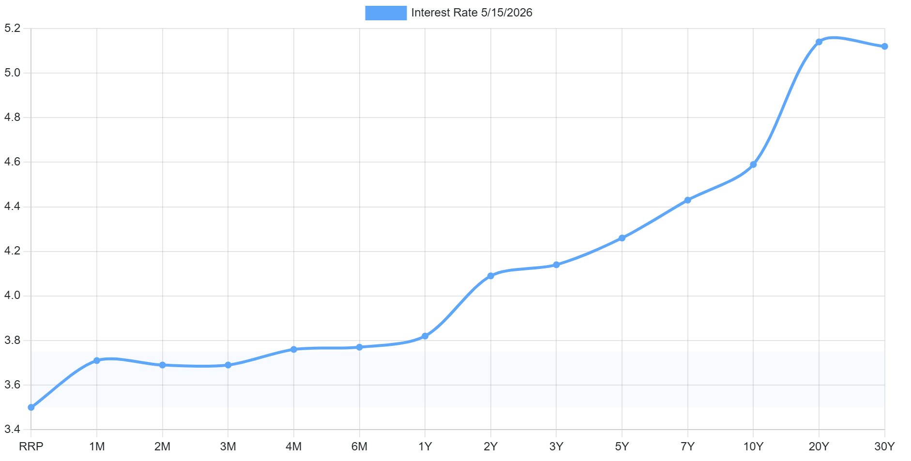

17/05/26 - 23/05/26
12 min read
Choose Language (Translation Errors may occur)
Disclaimer: The information provided is for educational purposes only. It does not constitute financial, investment, or personal advice. I am not a financial advisor or professional – I don’t know anything about the market or how it will perform (notice how I've used words like "perhaps" or "maybe"), thus the content here should not be taken as financial guidance. I am not a CFP, CPA, PFP or local legal equivalent, please seek professionals for financial advice, and by reading this you agree that I am not liable if I am wrong. Do your own research. The strategies, products, or services here are not being recommended, endorsed, or guaranteed. Past performance is not indicative of future results, and all investments carry risk, including the potential loss of principal.
Weekly Summary
- Global bonds have continued to sell off as fears of inflation caused by the US-Iran war have increased.
- Mortgage costs in Europe and North America have been increasing, even though there are no official rate hikes from the FED. Banks are responding to the increase in government borrowing costs and betting that rate hikes would be needed to counteract inflation.
- Big tech companies are borrowing in foreign currencies to fund their AI expenditure (again). Borrowing in different currencies allows them to capture the global market, and protects the "scarcity" of US-denominated bonds. Implicitly, this also means that investors have become more reluctant to fund AI expenditure, and higher corporate yields also reflect that extra risk. Perhaps this is an early sign that borrowing may become unsustainable.
- D1 Capital Partners is expected to be given a $20 billion stake in SpaceX (Hammond and Pollard).
- Musk loses his lawsuit against OpenAI.
- Google will release smart glasses in Q3, containing a camera, speakers, and integrating Gemini to interact with the user (Hays and Jamali).
Heads I win, Tails You Lose
HSBC has announced that they will issue a $1.5 Billion USD perpetual contingent converitble (CoCo) bond at a 6.75% interest rate for the first 7 years (Leung). Wow, that was a mouthful. Essentially, what that means is that HSBC issues a bond that pays an interest rate forever (perpetual); its interest is fixed at 6.75% in the first 7 years, then after that is subject to fluctuation, calculated by this formula:
$$ \text{Interest Rate (\%)} = \text{5-year US Treasury Yield} + 2.513\% $$
That sounds great right? You pay up front now, and you receive a relatively high yield indefinitely (5-year US treasury yields have historically hovered around 3.5-4.0%, so you'd be getting a similar interest rate after the 7 years).
What most people forget to do is read the fine print of the bond issues. These bonds are callable, which means that after 7 years, and leading up to each subsequent 5-year reset date, HSBC can redeem those bonds. That's not the worst part, I mean, you can still receive at least 7 good years of interest. What most people fail to realise, is that these bonds are contingent convertible (CoCo) bonds, a type of Additional Tier 1 (AT1) bonds, which are issued by banks to meet capital requirements and absorb losses during periods of financial distress. According to the World Economic Forum, they are "deemed as one of the riskiest ways to invest in banks" (Charlton).
What makes them so risky? Firstly, HSBC can cancel coupon (interest) payments at any time for any reason, before and after the 7 years are up. In periods of financial distress, such as when the Common Equity Tier 1 (CET1) ratio is below 7%, HSBC can convert those bonds into equity. They are also subject to the terms bound by UK Bail-In Power, where the UK authority can reduce any or all principal and interest due, or even cancel securities entirely without prior notice (HSBC Holdings PLC, Issuance). For reference, Credit Suisse's AT1 bonds were completely written off (in layment terms, made worthless) during the 2023 crisis, wiping out bondholder value, even though some equity holders retain some value of the company. This disrupts the notion that in bankruptcy or liquidation, bondholders (debtholders) should be paid first before equityholders, essentially increasing the risk of these types of securities. Investors, knowing this, would demand a higher return on these securities to take on that extra risk.
Let's take a look at the riskiness of this security. Since the bond is callable in 7 years, we will compare it to the risk-free rate, the 7-year treasury yield on the yield curve:

The Yield Curve. The US 7-year treasury yield is at 4.43% (Kotzan).
So \(6.75\% - 4.43\% = 2.32\%\) is the credit spread of the bond, compensating it for being a riskier asset class (from the contingencies aforementioned), and HSBC having a higher default risk than the US government. Thankfully, HSBC's CET1 ratio is 14.0% as of 2026 Q1, which is still way above the conversion point of 7% (HSBC Holdings PLC, Earnings Release). Major factors that could increase HSBC's chance of default is when there are greater loan defaults, asset devaluation in a market crisis forcing HSBC to write down assets, and if credit ratings of corporate borrowers are downgraded significantly.
These risks could be triggered by an AI bubble. Given that HSBC's lending to technology and AI firms have increased greatly over these years, an increase in loan defaults may decrease CET1. More importantly, secondary effects from these macroeconomic shocks (such as lowered stock returns decreasing consumer wealth, and increased retail defaults) would likely be more catastrophic to banks in general, triggering a larger collapse.
When may HSBC (or banks in general) decide not to pay interest on their AT1 bonds? Well, to preserve capital in times of a crisis (such as to prevent the CET1 ratio from falling further), if they are below the combined buffer requirement, or when they are subject to government regulation. All these risks must also be taken into account, and thus contributes to the larger credit spread.
In conclusion, this relatively high yield of 6.75% is probably fairly priced, if not slightly not worth it. It basically has the same risk as equity (in terms of coupon payments being cancellable, much akin to dividends), if not more, from the hidden risk that AT1 bonds can be written down entirely in the case of Credit Suisse. There is also limited upside to bonds (coupon payments are fixed), whereas for equity you can receive appreciation in the stock price and in dividends. In our current macroeconomic environment, the oil shock caused by the US-Iran war has put upwards pressure on inflation. Equity helps protect against inflation, whereas bonds do not (again due to the fixed upside). For these reasons, I think equity is probably the better bet.
Bibliography
- Charlton, Emma. “What Are AT1 Bonds and Why Do They Matter?” World Economic Forum, 31 Mar. 2023, www.weforum.org/stories/2023/03/at1-bonds-banking-financial/. Accessed 16 May 2026.
- Hammond, George, and Amelia Pollard. “SpaceX IPO Set to Hand $20bn Stake to One Hedge Fund.” @FinancialTimes, Financial Times, 18 May 2026, www.ft.com/content/f0838802-a923-43eb-9ea1-331cf6b5f038?syn-25a6b1a6=1. Accessed 19 May 2026.
- Hays, Kali, and Lily Jamali. “Google to Release First Smart Glasses since Google Glass Flop.” BBC News, 19 May 2026, www.bbc.co.uk/news/articles/cvgz1ynq1nqo. Accessed 20 May 2026.
- HSBC Holdings PLC. “HSBC Holdings Plc Earnings Release 1Q26.” HSBC, HSBC, 2026, www.hsbc.com/-/files/hsbc/investors/hsbc-results/2026/1q/pdfs/hsbc-holdings-plc/260505-1q-2026-earnings-release.pdf. Accessed 15 May 2026.
- HSBC Holdings PLC. “ISSUANCE of PERPETUAL SUBORDINATED CONTINGENT CONVERTIBLE SECURITIES.” HSBC, HSBC, 18 Mar. 2026, www.hsbc.com/-/files/hsbc/investors/results-and-announcements/stock-exchange-announcements/2026/mar/sea-260318-hsbc-holdings-plc-issuance-of-perpetual-subordinated-contingent-convertible-securities.pdf. Accessed 15 May 2026.
- Kotzan, Winston. “US Treasury Yield Curve.” www.ustreasuryyieldcurve.com, www.ustreasuryyieldcurve.com/. Accessed 16 May 2026.
- Leung, Gloria. “HSBC Plans to Issue US$1.5 Billion 6.75pc Perpetual Subordinated Contingent Convertible Securities.” thestandard.com.hk, The Standard 英文虎報, 12 May 2026, www.thestandard.com.hk/finance/article/331840/HSBC-plans-to-issue-US15-billion-675pc-perpetual-subordinated-contingent-convertible-securities. Accessed 16 May 2026.